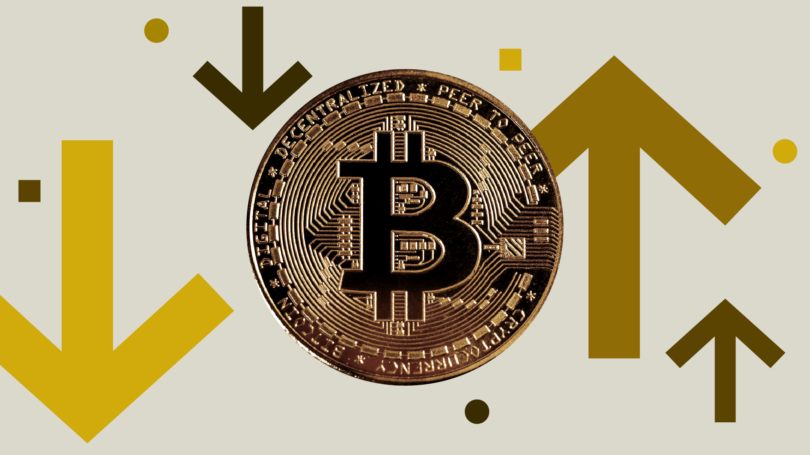
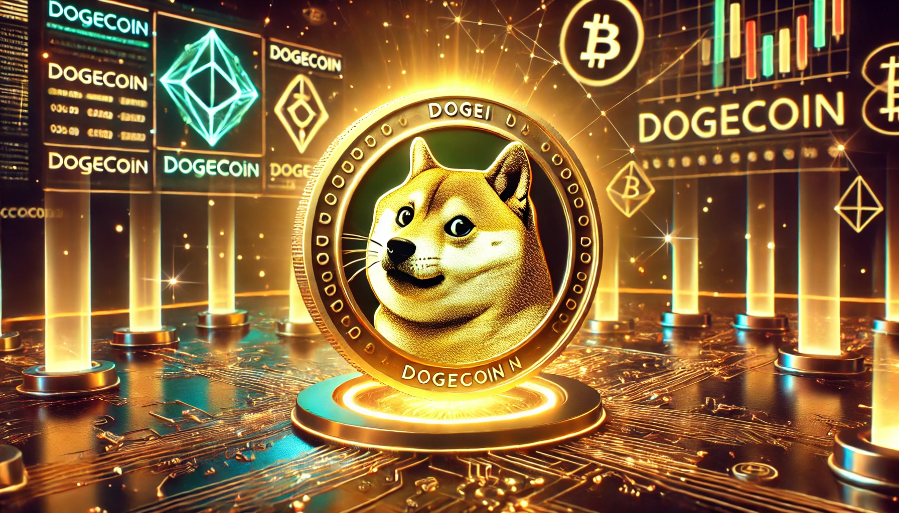

| BitCoin |
Bitcoin (BTC) is a cryptocurrency (a virtual currency) designed to act as money and a form of payment outside the control of any one person, group, or entity. This removes the need for trusted third-party involvement (e.g., a mint or bank) in financial transactions.
Bitcoin was introduced to the public in 2009 by an anonymous developer or group of developers using the name Satoshi Nakamoto. It has since become the most well-known and largest cryptocurrency in the world. Its popularity has inspired the development of many other cryptocurrencies. |
| DogeCoin |
Dogecoin (DOGE) is a cryptocurrency that originally started as a joke but has since evolved into a serious digital currency. The coin was initially created as a lightweight alternative to Bitcoin, with an emphasis on speed and low transaction costs. However, the coin has also built a strong community of supporters, in part thanks to the iconic Shiba Inu meme that serves as its mascot. Over the years, Dogecoin has become a popular cryptocurrency with an active community of developers, traders, and investors.
A significant difference from Bitcoin is that Dogecoin has a much higher maximum supply. While Bitcoin has a limit of 21 million coins, Dogecoin has a maximum supply of up to 129 billion coins. This makes Dogecoin cheaper than Bitcoin and more accessible to small investors. |
|
| Ethereum |
What is Ethereum? Ethereum (ETH) is one of the largest and most well-known cryptocurrencies in the world. It was launched in 2015 by developer Vitalik Buterin and has since experienced tremendous growth. Ethereum is unique because it is not just a cryptocurrency but also a decentralized platform for developing decentralized applications (dApps) and smart contracts. Decentralized means it is not controlled by a company, institution, or other authority. Due to its combination of a cryptocurrency and a digital platform, Ethereum has the potential to completely transform how we conduct business and exchange value on the internet.
|